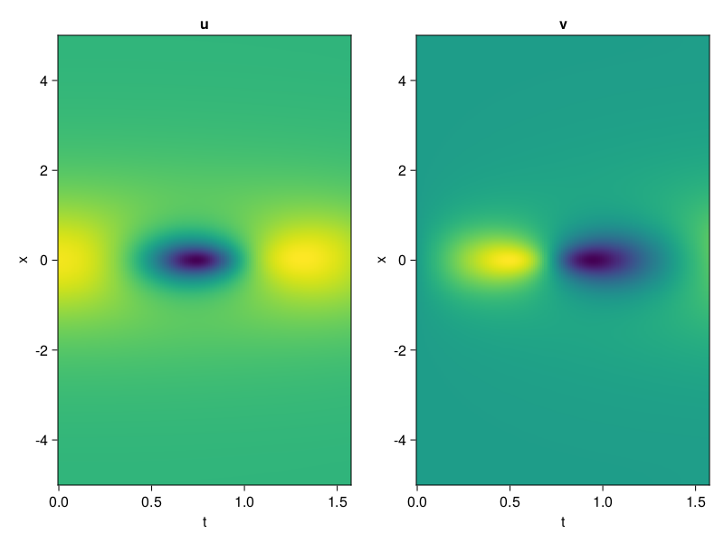
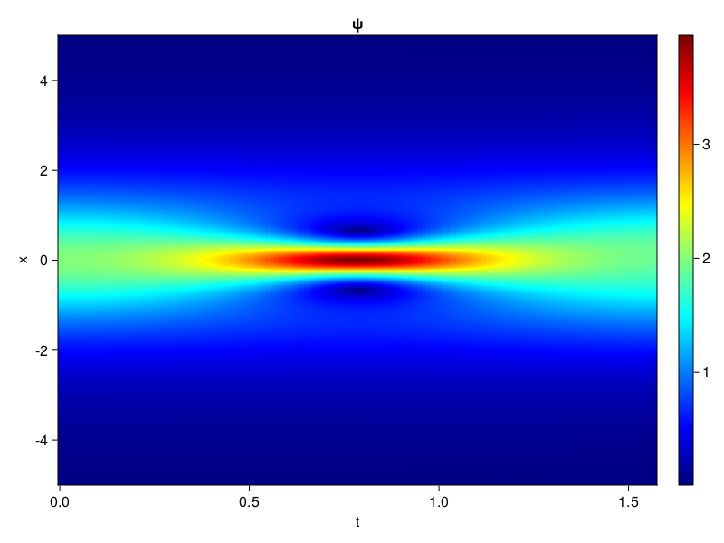
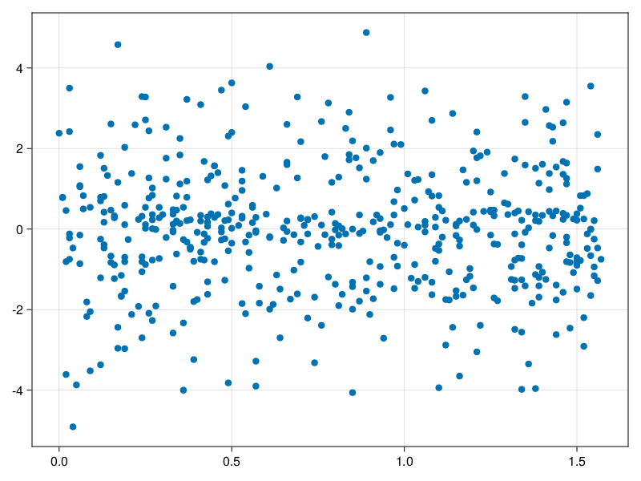

Schrödinger equation
The nonlinear Shrödinger equation is given by
\[\mathrm{i} \partial_t \psi=-\frac{1}{2} \sigma \partial_{x x} \psi-\beta|\psi|^2 \psi\]
Let $\sigma=\beta=1, \psi=u+v i$, the equation can be transformed into a system of partial differential equations
using ModelingToolkit, IntervalSets, Sophon, CairoMakie
using Optimization, OptimizationOptimJL
@parameters x,t
@variables u(..), v(..)
Dₜ = Differential(t)
Dₓ² = Differential(x)^2
eqs=[Dₜ(u(x,t)) ~ -Dₓ²(v(x,t))/2 - (abs2(v(x,t)) + abs2(u(x,t))) * v(x,t),
Dₜ(v(x,t)) ~ Dₓ²(u(x,t))/2 + (abs2(v(x,t)) + abs2(u(x,t))) * u(x,t)]
bcs = [u(x, 0.0) ~ 2sech(x),
v(x, 0.0) ~ 0.0,
u(-5.0, t) ~ u(5.0, t),
v(-5.0, t) ~ v(5.0, t)]
domains = [x ∈ Interval(-5.0, 5.0),
t ∈ Interval(0.0, π/2)]
@named pde_system = PDESystem(eqs, bcs, domains, [x,t], [u(x,t),v(x,t)])\[ \begin{align} \frac{\mathrm{d}}{\mathrm{d}t} u\left( x, t \right) =& - \frac{1}{2} \frac{\mathrm{d}}{\mathrm{d}x} \frac{\mathrm{d}}{\mathrm{d}x} v\left( x, t \right) - \left( \left|u\left( x, t \right)\right|^{2} + \left|v\left( x, t \right)\right|^{2} \right) v\left( x, t \right) \\ \frac{\mathrm{d}}{\mathrm{d}t} v\left( x, t \right) =& \frac{1}{2} \frac{\mathrm{d}}{\mathrm{d}x} \frac{\mathrm{d}}{\mathrm{d}x} u\left( x, t \right) + \left( \left|u\left( x, t \right)\right|^{2} + \left|v\left( x, t \right)\right|^{2} \right) u\left( x, t \right) \end{align} \]
pinn = PINN(u = Siren(2,1; hidden_dims=16,num_layers=4, omega = 1.0),
v = Siren(2,1; hidden_dims=16,num_layers=4, omega = 1.0))
sampler = QuasiRandomSampler(500, (200,200,20,20))
strategy = NonAdaptiveTraining(1,(10,10,1,1))
prob = Sophon.discretize(pde_system, pinn, sampler, strategy)OptimizationProblem. In-place: true
u0: ComponentVector{Float64}(u = (layer_1 = (weight = [0.10873246192932129 0.015554726123809814; -0.4406181573867798 -0.02063751220703125; … ; -0.3932867646217346 -0.17019903659820557; 0.4093407988548279 0.2785547375679016], bias = [0.0; 0.0; … ; 0.0; 0.0;;]), layer_2 = (weight = [-0.051361531019210815 -0.42454254627227783 … 0.23720994591712952 -0.26254963874816895; 0.5285699367523193 0.4186016023159027 … -0.3922557234764099 0.05156673491001129; … ; -0.5975385308265686 -0.14148661494255066 … -0.23055799305438995 -0.005251800641417503; 0.31674784421920776 0.2311369627714157 … -0.4086003303527832 0.36132535338401794], bias = [0.0; 0.0; … ; 0.0; 0.0;;]), layer_3 = (weight = [-0.4166834354400635 0.1706427037715912 … 0.5678356885910034 -0.3158975839614868; -0.3853462338447571 0.2829202115535736 … 0.6070798635482788 -0.20130597054958344; … ; 0.03775497153401375 0.43637561798095703 … -0.43928205966949463 -0.45202305912971497; -0.26242101192474365 0.5076432824134827 … -0.3939064145088196 0.3818108141422272], bias = [0.0; 0.0; … ; 0.0; 0.0;;]), layer_4 = (weight = [0.14440391957759857 -0.10483671724796295 … -0.14858393371105194 -0.43741491436958313; -0.3130522668361664 -0.15311573445796967 … -0.33886611461639404 0.029195519164204597; … ; -0.2694835364818573 0.5034339427947998 … 0.10596223920583725 -0.41895347833633423; 0.41843363642692566 0.06701626628637314 … -0.05388953909277916 0.5769415497779846], bias = [0.0; 0.0; … ; 0.0; 0.0;;]), layer_5 = (weight = [-0.48651131987571716 0.5725207328796387 … -0.5900784134864807 -0.3959495723247528], bias = [0.0;;])), v = (layer_1 = (weight = [0.416567325592041 -0.25763505697250366; -0.25149524211883545 0.184695303440094; … ; -0.07109028100967407 -0.006161510944366455; -0.49416911602020264 -0.14505928754806519], bias = [0.0; 0.0; … ; 0.0; 0.0;;]), layer_2 = (weight = [0.4618930220603943 0.29495981335639954 … -0.40266531705856323 -0.06240657716989517; 0.32028770446777344 0.11874359846115112 … 0.015538371168076992 0.22785302996635437; … ; -0.2276776134967804 0.19434428215026855 … -0.10106033086776733 0.44902244210243225; -0.26201558113098145 0.24440917372703552 … -0.341055303812027 0.36145150661468506], bias = [0.0; 0.0; … ; 0.0; 0.0;;]), layer_3 = (weight = [-0.4641839861869812 0.3344821333885193 … 0.17638331651687622 -0.5549882054328918; -0.4228554964065552 0.5492731332778931 … 0.30260202288627625 -0.6056584715843201; … ; 0.3653774559497833 -0.26401448249816895 … 0.5753313899040222 0.1470998376607895; -0.255201131105423 -0.5019005537033081 … -0.15142817795276642 -0.5120231509208679], bias = [0.0; 0.0; … ; 0.0; 0.0;;]), layer_4 = (weight = [-0.16226662695407867 0.09562048316001892 … -0.5538339614868164 -0.22089353203773499; 0.1650068461894989 0.33565327525138855 … 0.279155433177948 -0.5873838067054749; … ; -0.0007359178271144629 -0.4018282890319824 … 0.368960976600647 -0.46713706851005554; -0.28940680623054504 0.3131352663040161 … -0.2548149526119232 -0.5834510922431946], bias = [0.0; 0.0; … ; 0.0; 0.0;;]), layer_5 = (weight = [-0.47311514616012573 0.34379443526268005 … -0.23270851373672485 -0.23682019114494324], bias = [0.0;;])))Now we train the neural nets and resample data while training.
function train(pde_system, prob, sampler, strategy, resample_period = 500, n=10)
bfgs = BFGS()
res = Optimization.solve(prob, bfgs; maxiters=2000)
for i in 1:n
data = Sophon.sample(pde_system, sampler)
prob = remake(prob; u0=res.u, p=data)
res = Optimization.solve(prob, bfgs; maxiters=resample_period)
end
return res
end
res = train(pde_system, prob, sampler, strategy)u: ComponentVector{Float64}(u = (layer_1 = (weight = [0.4573411453030447 0.2908836908346209; -0.24301265133601016 0.41219412326873117; … ; -1.1669890179315923 -0.30763657768678854; 0.34231504274811186 0.4144850889283483], bias = [-0.048526975665443624; 0.36503668597431077; … ; 0.17409439427841447; -0.2677807981547894;;]), layer_2 = (weight = [-0.09306571057844439 -0.542914234976312 … 0.2585526997097054 -0.28403904575861866; 0.5347216730991121 0.7307774166377361 … -0.7403909451994248 0.08411491797102981; … ; -0.43505732927225876 -0.11015780135067152 … -0.0698155945653923 -0.023954357274264863; 0.3307184609388393 -0.06008181074099144 … -0.3556500230580061 0.32183525030373517], bias = [-0.34746781602146287; 0.5297733528098348; … ; -0.047948890370380054; -0.03358928315956345;;]), layer_3 = (weight = [-0.005030382173309012 0.1934074804256638 … 0.5990937344612004 -0.09309202728902184; -0.6724440787914533 -0.4071763091459255 … 0.4433903886685111 0.08517054099289346; … ; 0.0947334766141487 0.1939921457606355 … -0.5824414535732965 -0.488223341715877; -0.11972033760588136 0.2767751552924394 … -0.22017727996405514 0.08012366475550908], bias = [0.28710238342220584; 0.31256257595677717; … ; 0.10235306370137867; -0.24837682148258705;;]), layer_4 = (weight = [0.03587054646039965 0.10226741173887799 … -0.0482385641233926 -0.34241086324672304; 0.14174483378022046 -0.14523048253734575 … -0.7822523882445869 -0.46801885540132254; … ; -0.5557314584421681 0.19415298791606383 … 0.1165495371652597 -0.7066382468151621; 0.5997098810855713 0.31107214791333476 … 0.053345336870797955 0.7007178830343259], bias = [0.32777013902528174; -0.1555036142181608; … ; 0.0811190645060615; -0.13233387976176939;;]), layer_5 = (weight = [-0.3964816719472514 0.7500012610803801 … -0.4334171531595407 -0.643198029230107], bias = [0.11417968287172503;;])), v = (layer_1 = (weight = [1.0577862469850614 -0.5564956365376552; -0.5609824907016734 -0.2073309026211958; … ; 0.09817843484357186 -0.024194941940964762; -1.5539696361526774 -0.6038130170913364], bias = [0.4052198920061785; -0.18828365491350305; … ; 0.2837834849228497; 0.2219984540924207;;]), layer_2 = (weight = [0.5182530476747883 0.2489911068128974 … -0.40417614373101785 0.07167143532019261; -0.07737854320575015 0.36846895376955274 … -0.020103541415338617 0.40811349902441074; … ; -0.08211221556571834 0.10838551331749013 … -0.18736376677379307 0.2254751929476531; -0.5769493754519169 0.45611430692244986 … -0.09847578132113474 0.5150066275026146], bias = [-0.09879627316434073; 0.22174913481295178; … ; 0.13442535400839198; 0.03747987977084554;;]), layer_3 = (weight = [-0.49262732205793774 0.4164132976644744 … 0.5634449513880273 -0.3084195895183682; -0.5240417359824457 0.5526538869055193 … 0.37225740780531597 -0.2594514910622576; … ; 0.2590071209964825 -0.4366849400451062 … 0.4064400997749526 0.15607977012331228; 0.0205533534209046 -0.28594444327231244 … -0.21675504163845974 -0.08496714189750257], bias = [0.041426464151175076; -0.19315616776303227; … ; 0.10187623215841815; -0.11243359765741931;;]), layer_4 = (weight = [-0.49555005279180864 -0.10570800568466314 … -0.6658245900333248 0.012737413715163074; 0.5127865717555553 0.5417278764485062 … 0.5163113594557945 -0.544074761941332; … ; -0.071600099532475 -0.6575113075470301 … 0.25959981949353017 -0.499858249805771; -0.6458779523202803 -0.07724278707320105 … -0.5112297527232056 -0.8220245391558785], bias = [0.30262224894415213; 0.4062614760906722; … ; 0.08666081968829493; 0.025271195963094597;;]), layer_5 = (weight = [-0.322114118976331 0.5159090381891179 … -0.31924485477948095 -0.7648117488376444], bias = [-0.20128478776544445;;])))phi = pinn.phi
ps = res.u
xs, ts= [infimum(d.domain):0.01:supremum(d.domain) for d in pde_system.domain]
u = [sum(phi.u(([x,t]), ps.u)) for x in xs, t in ts]
v = [sum(phi.v(([x,t]), ps.v)) for x in xs, t in ts]
ψ = @. sqrt(u^2+ v^2)
axis = (xlabel="t", ylabel="x", title="u")
fig, ax1, hm1 = heatmap(ts, xs, u', axis=axis)
ax2, hm2= heatmap(fig[1, end+1], ts, xs, v', axis= merge(axis, (; title="v")))
display(fig)
axis = (xlabel="t", ylabel="x", title="ψ")
fig, ax1, hm1 = heatmap(ts, xs, ψ', axis=axis, colormap=:jet)
Colorbar(fig[:, end+1], hm1)
display(fig)
Customize Sampling
Bascially any sampling method is supportted. For example we can sample data according to the predicted solution.
using StatsBase
data = vec([[x, t] for x in xs, t in ts])
wv = vec(ψ)
new_data = wsample(data, wv, 500)
new_data = reduce(hcat, new_data)
fig, ax = scatter(new_data[2,:], new_data[1,:])
prob.p[1] = new_data
prob.p[2] = new_data
prob = remake(prob; u0 = res.u)
# res = Optimization.solve(prob, bfgs; maxiters=1000)OptimizationProblem. In-place: true
u0: ComponentVector{Float64}(u = (layer_1 = (weight = [0.4573411453030447 0.2908836908346209; -0.24301265133601016 0.41219412326873117; … ; -1.1669890179315923 -0.30763657768678854; 0.34231504274811186 0.4144850889283483], bias = [-0.048526975665443624; 0.36503668597431077; … ; 0.17409439427841447; -0.2677807981547894;;]), layer_2 = (weight = [-0.09306571057844439 -0.542914234976312 … 0.2585526997097054 -0.28403904575861866; 0.5347216730991121 0.7307774166377361 … -0.7403909451994248 0.08411491797102981; … ; -0.43505732927225876 -0.11015780135067152 … -0.0698155945653923 -0.023954357274264863; 0.3307184609388393 -0.06008181074099144 … -0.3556500230580061 0.32183525030373517], bias = [-0.34746781602146287; 0.5297733528098348; … ; -0.047948890370380054; -0.03358928315956345;;]), layer_3 = (weight = [-0.005030382173309012 0.1934074804256638 … 0.5990937344612004 -0.09309202728902184; -0.6724440787914533 -0.4071763091459255 … 0.4433903886685111 0.08517054099289346; … ; 0.0947334766141487 0.1939921457606355 … -0.5824414535732965 -0.488223341715877; -0.11972033760588136 0.2767751552924394 … -0.22017727996405514 0.08012366475550908], bias = [0.28710238342220584; 0.31256257595677717; … ; 0.10235306370137867; -0.24837682148258705;;]), layer_4 = (weight = [0.03587054646039965 0.10226741173887799 … -0.0482385641233926 -0.34241086324672304; 0.14174483378022046 -0.14523048253734575 … -0.7822523882445869 -0.46801885540132254; … ; -0.5557314584421681 0.19415298791606383 … 0.1165495371652597 -0.7066382468151621; 0.5997098810855713 0.31107214791333476 … 0.053345336870797955 0.7007178830343259], bias = [0.32777013902528174; -0.1555036142181608; … ; 0.0811190645060615; -0.13233387976176939;;]), layer_5 = (weight = [-0.3964816719472514 0.7500012610803801 … -0.4334171531595407 -0.643198029230107], bias = [0.11417968287172503;;])), v = (layer_1 = (weight = [1.0577862469850614 -0.5564956365376552; -0.5609824907016734 -0.2073309026211958; … ; 0.09817843484357186 -0.024194941940964762; -1.5539696361526774 -0.6038130170913364], bias = [0.4052198920061785; -0.18828365491350305; … ; 0.2837834849228497; 0.2219984540924207;;]), layer_2 = (weight = [0.5182530476747883 0.2489911068128974 … -0.40417614373101785 0.07167143532019261; -0.07737854320575015 0.36846895376955274 … -0.020103541415338617 0.40811349902441074; … ; -0.08211221556571834 0.10838551331749013 … -0.18736376677379307 0.2254751929476531; -0.5769493754519169 0.45611430692244986 … -0.09847578132113474 0.5150066275026146], bias = [-0.09879627316434073; 0.22174913481295178; … ; 0.13442535400839198; 0.03747987977084554;;]), layer_3 = (weight = [-0.49262732205793774 0.4164132976644744 … 0.5634449513880273 -0.3084195895183682; -0.5240417359824457 0.5526538869055193 … 0.37225740780531597 -0.2594514910622576; … ; 0.2590071209964825 -0.4366849400451062 … 0.4064400997749526 0.15607977012331228; 0.0205533534209046 -0.28594444327231244 … -0.21675504163845974 -0.08496714189750257], bias = [0.041426464151175076; -0.19315616776303227; … ; 0.10187623215841815; -0.11243359765741931;;]), layer_4 = (weight = [-0.49555005279180864 -0.10570800568466314 … -0.6658245900333248 0.012737413715163074; 0.5127865717555553 0.5417278764485062 … 0.5163113594557945 -0.544074761941332; … ; -0.071600099532475 -0.6575113075470301 … 0.25959981949353017 -0.499858249805771; -0.6458779523202803 -0.07724278707320105 … -0.5112297527232056 -0.8220245391558785], bias = [0.30262224894415213; 0.4062614760906722; … ; 0.08666081968829493; 0.025271195963094597;;]), layer_5 = (weight = [-0.322114118976331 0.5159090381891179 … -0.31924485477948095 -0.7648117488376444], bias = [-0.20128478776544445;;])))